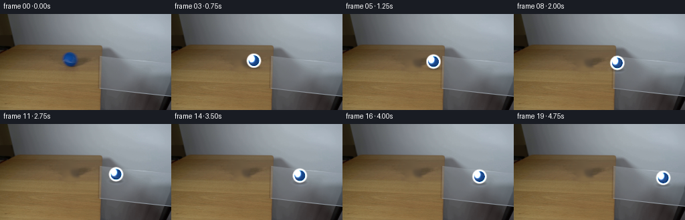
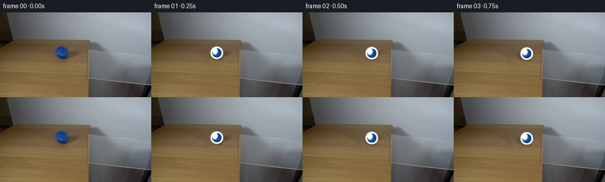
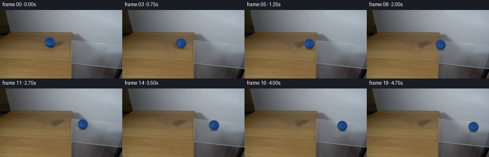
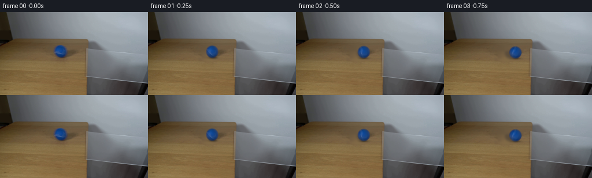

CODING AGENTS AS PIXEL WORLD MODELS
traex/DeepSeek-V4.1-Flash · 0026
点击播放 · 原生 RGB 像素
逐轮保存的候选
回放视频、检查图与代码变化。
每份候选均可单独播放。实际图片检查记录在下方工具轨迹中。
候选 01播放与检查图
点击播放 · 原生 RGB 像素


展开代码变化
--- 上一保存版本
+++ 本次保存版本
@@ -0,0 +1,188 @@
+from pathlib import Path
+
+import cv2
+import numpy as np
+from PIL import Image
+
+import artifact_io
+
+
+CASE_DIR = Path(__file__).resolve().parent
+WIDTH, HEIGHT, FRAMES = 256, 144, 20
+
+# Original ball geometry in the supplied frame.
+SOURCE_CX, SOURCE_CY = 104.3, 67.5
+BALL_RADIUS = 10.7
+
+
+def bilinear(image, x, y):
+ """Sample a float RGB image at floating-point coordinates."""
+ x = np.asarray(x, dtype=np.float32)
+ y = np.asarray(y, dtype=np.float32)
+ x0 = np.floor(x).astype(np.int32)
+ y0 = np.floor(y).astype(np.int32)
+ x1 = np.clip(x0 + 1, 0, image.shape[1] - 1)
+ y1 = np.clip(y0 + 1, 0, image.shape[0] - 1)
+ x0 = np.clip(x0, 0, image.shape[1] - 1)
+ y0 = np.clip(y0, 0, image.shape[0] - 1)
+ fx = (x - x0)[..., None]
+ fy = (y - y0)[..., None]
+ top = image[y0, x0] * (1.0 - fx) + image[y0, x1] * fx
+ bottom = image[y1, x0] * (1.0 - fx) + image[y1, x1] * fx
+ return top * (1.0 - fy) + bottom * fy
+
+
+def make_clean_plate(image):
+ """Remove the starting ball and contact shadow from the tabletop."""
+ h, w = image.shape[:2]
+ yy, xx = np.mgrid[:h, :w]
+ ball = ((xx - SOURCE_CX) / 13.0) ** 2 + ((yy - SOURCE_CY) / 13.0) ** 2 <= 1.0
+ shadow = ((xx - (SOURCE_CX + 1.5)) / 15.0) ** 2 + (
+ (yy - (SOURCE_CY + 13.0)) / 4.8
+ ) ** 2 <= 1.0
+ mask = np.where(ball | shadow, 255, 0).astype(np.uint8)
+
+ source = np.clip(image * 255.0, 0, 255).astype(np.uint8)
+ clean = cv2.inpaint(source, mask, 5.0, cv2.INPAINT_TELEA).astype(np.float32) / 255.0
+
+ # Suppress residual directional streaks from inpainting while retaining the
+ # broad wood grain surrounding the removed ball.
+ softened = cv2.GaussianBlur(clean, (0, 0), 1.15)
+ blend = cv2.GaussianBlur(mask.astype(np.float32) / 255.0, (0, 0), 1.8)
+ blend = np.clip(blend * 1.25, 0.0, 1.0)[..., None]
+ return clean * (1.0 - blend) + softened * blend
+
+
+def make_ball_bank(image):
+ """Extract the real ball shading and a rotating texture residual."""
+ pad = 17
+ cx, cy = int(round(SOURCE_CX)), int(round(SOURCE_CY))
+ x0, y0 = cx - pad, cy - pad
+ patch = image[y0 : y0 + 2 * pad + 1, x0 : x0 + 2 * pad + 1].copy()
+ patch = cv2.GaussianBlur(patch, (0, 0), 0.35)
+ shading = cv2.GaussianBlur(patch, (0, 0), 2.25)
+ residual = patch - shading
+ return patch, shading, residual, (x0, y0)
+
+
+def render_ball(plate, source_shading, source_residual, bank_origin, x, y, angle):
+ """Render the supplied ball as a rotating, antialiased sphere."""
+ h, w = plate.shape[:2]
+ pad = 13
+ sx0 = max(int(np.floor(x)) - pad, 0)
+ sx1 = min(int(np.ceil(x)) + pad + 1, w)
+ sy0 = max(int(np.floor(y)) - pad, 0)
+ sy1 = min(int(np.ceil(y)) + pad + 1, h)
+ yy, xx = np.mgrid[sy0:sy1, sx0:sx1]
+ dx = xx - x
+ dy = yy - y
+ rr = np.sqrt(dx * dx + dy * dy)
+ alpha = np.clip((BALL_RADIUS + 0.8 - rr) / 1.6, 0.0, 1.0)
+
+ sample_r = np.minimum(rr, BALL_RADIUS - 0.65)
+ unit_x = np.divide(dx, rr, out=np.zeros_like(dx), where=rr > 1e-5)
+ unit_y = np.divide(dy, rr, out=np.zeros_like(dy), where=rr > 1e-5)
+ source_x = SOURCE_CX + sample_r * unit_x
+ source_y = SOURCE_CY + sample_r * unit_y
+
+ # Fixed shading follows the real illumination. The high-frequency residual
+ # rotates about the projected center, giving the ball a visible roll.
+ shade = bilinear(
+ source_shading,
+ source_x - bank_origin[0],
+ source_y - bank_origin[1],
+ )
+ ca, sa = np.cos(-angle), np.sin(-angle)
+ rx = np.clip(dx * ca - dy * sa, -BALL_RADIUS + 0.7, BALL_RADIUS - 0.7)
+ ry = np.clip(dx * sa + dy * ca, -BALL_RADIUS + 0.7, BALL_RADIUS - 0.7)
+ tex = bilinear(
+ source_residual,
+ SOURCE_CX + rx - bank_origin[0],
+ SOURCE_CY + ry - bank_origin[1],
+ )
+ color = shade + 0.72 * tex
+
+ rim = np.clip((rr - BALL_RADIUS * 0.72) / (BALL_RADIUS * 0.28), 0.0, 1.0)
+ color *= (1.0 - 0.13 * rim[..., None])
+ color += (0.10 * rim)[..., None] * np.array([38.0, 53.0, 78.0])
+
+ hx, hy = dx + 3.2, dy + 3.0
+ highlight = np.exp(-(hx * hx / 7.0 + hy * hy / 10.0))
+ color += (highlight * 0.10)[..., None] * np.array([85.0, 92.0, 105.0])
+
+ target = plate[sy0:sy1, sx0:sx1]
+ plate[sy0:sy1, sx0:sx1] = (
+ target * (1.0 - alpha[..., None])
+ + np.clip(color, 0.0, 1.0) * alpha[..., None]
+ )
+ return plate
+
+
+def add_contact_effects(plate, x, y, over_glass):
+ """Add a grounded shadow and, on the glass, a faint reflection."""
+ h, w = plate.shape[:2]
+ pad = 27
+ x0, x1 = max(0, int(x) - pad), min(w, int(x) + pad + 1)
+ y0, y1 = max(0, int(y) - pad), min(h, int(y) + pad + 1)
+ yy, xx = np.mgrid[y0:y1, x0:x1]
+
+ shadow_x = x + 1.0
+ shadow_y = y + BALL_RADIUS - 0.2
+ sx = (xx - shadow_x) / (10.4 if not over_glass else 11.8)
+ sy = (yy - shadow_y) / (2.6 if not over_glass else 3.5)
+ soft = np.exp(-(sx * sx + sy * sy) * 1.7)
+ core = np.exp(
+ -(
+ ((xx - shadow_x) / 6.2) ** 2
+ + ((yy - shadow_y) / 1.35) ** 2
+ )
+ * 1.6
+ )
+
+ strength = 0.30 if not over_glass else 0.20
+ plate[y0:y1, x0:x1] *= (1.0 - strength * soft - 0.13 * core)[..., None]
+
+ if over_glass:
+ # A compressed reflection and restrained caustic make contact with the
+ # clear glass legible without obscuring the photographed glass.
+ rx = (xx - (x + 1.5)) / 7.2
+ ry = (yy - (y + 14.5)) / 3.0
+ reflection = np.exp(-(rx * rx + ry * ry) * 1.7)
+ plate[y0:y1, x0:x1] += (
+ reflection[..., None] * np.array([0.18, 0.29, 0.46]) * 0.075
+ )
+
+ rr = np.sqrt(((xx - x) / 13.0) ** 2 + ((yy - (y + 10.0)) / 5.0) ** 2)
+ ring = np.exp(-((rr - 0.94) / 0.20) ** 2)
+ plate[y0:y1, x0:x1] += ring[..., None] * np.array([0.022, 0.028, 0.034])
+ return plate
+
+
+def main():
+ original_image = Image.open(CASE_DIR / "first_frame.png").convert("RGB")
+ original = np.asarray(original_image, dtype=np.float32) / 255.0
+ assert original.shape == (HEIGHT, WIDTH, 3)
+
+ clean = make_clean_plate(original)
+ _, shading, residual, bank_origin = make_ball_bank(original)
+ frames = np.empty((FRAMES, HEIGHT, WIDTH, 3), dtype=np.uint8)
+ frames[0] = np.asarray(original_image, dtype=np.uint8)
+
+ # Constant-speed roll from the tabletop onto the glass. A small perspective
+ # slope follows the table/glass surface rather than moving horizontally.
+ for index in range(1, FRAMES):
+ x = SOURCE_CX + 6.25 * index
+ y = SOURCE_CY + 0.108 * (x - SOURCE_CX)
+ angle = (x - SOURCE_CX) / BALL_RADIUS
+
+ frame = clean.copy()
+ over_glass = x > 148.5
+ frame = add_contact_effects(frame, x, y, over_glass)
+ frame = render_ball(frame, shading, residual, bank_origin, x, y, angle)
+ frames[index] = np.clip(frame * 255.0 + 0.5, 0, 255).astype(np.uint8)
+
+ artifact_io.save(frames, CASE_DIR)
+
+
+if __name__ == "__main__":
+ main()
候选 02播放与检查图
点击播放 · 原生 RGB 像素

展开代码变化
--- 上一保存版本
+++ 本次保存版本
@@ -104,11 +104,13 @@
rim = np.clip((rr - BALL_RADIUS * 0.72) / (BALL_RADIUS * 0.28), 0.0, 1.0)
color *= (1.0 - 0.13 * rim[..., None])
- color += (0.10 * rim)[..., None] * np.array([38.0, 53.0, 78.0])
+ color += (0.10 * rim)[..., None] * np.array([38.0, 53.0, 78.0]) / 255.0
hx, hy = dx + 3.2, dy + 3.0
highlight = np.exp(-(hx * hx / 7.0 + hy * hy / 10.0))
- color += (highlight * 0.10)[..., None] * np.array([85.0, 92.0, 105.0])
+ color += (
+ (highlight * 0.10)[..., None] * np.array([85.0, 92.0, 105.0]) / 255.0
+ )
target = plate[sy0:sy1, sx0:sx1]
plate[sy0:sy1, sx0:sx1] = (
候选 03播放与检查图
点击播放 · 原生 RGB 像素

展开代码变化
--- 上一保存版本
+++ 本次保存版本
@@ -120,7 +120,7 @@
return plate
-def add_contact_effects(plate, x, y, over_glass):
+def add_contact_effects(plate, x, y, glass_mix):
"""Add a grounded shadow and, on the glass, a faint reflection."""
h, w = plate.shape[:2]
pad = 27
@@ -130,8 +130,8 @@
shadow_x = x + 1.0
shadow_y = y + BALL_RADIUS - 0.2
- sx = (xx - shadow_x) / (10.4 if not over_glass else 11.8)
- sy = (yy - shadow_y) / (2.6 if not over_glass else 3.5)
+ sx = (xx - shadow_x) / (10.4 + 1.4 * glass_mix)
+ sy = (yy - shadow_y) / (2.6 + 0.9 * glass_mix)
soft = np.exp(-(sx * sx + sy * sy) * 1.7)
core = np.exp(
-(
@@ -141,21 +141,21 @@
* 1.6
)
- strength = 0.30 if not over_glass else 0.20
+ strength = 0.30 - 0.10 * glass_mix
plate[y0:y1, x0:x1] *= (1.0 - strength * soft - 0.13 * core)[..., None]
- if over_glass:
+ if glass_mix > 0.0:
# A compressed reflection and restrained caustic make contact with the
# clear glass legible without obscuring the photographed glass.
rx = (xx - (x + 1.5)) / 7.2
ry = (yy - (y + 14.5)) / 3.0
- reflection = np.exp(-(rx * rx + ry * ry) * 1.7)
+ reflection = glass_mix * np.exp(-(rx * rx + ry * ry) * 1.7)
plate[y0:y1, x0:x1] += (
reflection[..., None] * np.array([0.18, 0.29, 0.46]) * 0.075
)
rr = np.sqrt(((xx - x) / 13.0) ** 2 + ((yy - (y + 10.0)) / 5.0) ** 2)
- ring = np.exp(-((rr - 0.94) / 0.20) ** 2)
+ ring = glass_mix * np.exp(-((rr - 0.94) / 0.20) ** 2)
plate[y0:y1, x0:x1] += ring[..., None] * np.array([0.022, 0.028, 0.034])
return plate
@@ -178,8 +178,8 @@
angle = (x - SOURCE_CX) / BALL_RADIUS
frame = clean.copy()
- over_glass = x > 148.5
- frame = add_contact_effects(frame, x, y, over_glass)
+ glass_mix = float(np.clip((x - 146.5) / 9.0, 0.0, 1.0))
+ frame = add_contact_effects(frame, x, y, glass_mix)
frame = render_ball(frame, shading, residual, bank_origin, x, y, angle)
frames[index] = np.clip(frame * 255.0 + 0.5, 0, 255).astype(np.uint8)
可观测工具轨迹
实际执行的命令与返回图片。
命令 1exit 0
/bin/bash -c "pwd && rg --files -g '"'!*__pycache__*'"'"
命令 2exit 0
/bin/bash -c "sed -n '1,240p' GENERATION_RULES.md"
命令 3exit 0
/bin/bash -c "sed -n '1,240p' prompt.txt"
命令 4exit 0
/bin/bash -c 'file first_frame.png && identify first_frame.png 2>/dev/null || true && ls -lah'
命令 5exit 0
/bin/bash -c "python3 - <<'PY'
from PIL import Image
import numpy as np
im=np.array(Image.open('first_frame.png').convert('RGB'))
print(im.shape, im.dtype)
print('range', im.reshape(-1,3).min(0), im.reshape(-1,3).max(0))
print('mean', im.reshape(-1,3).mean(0))
# quantized symbolic map 64x36, dominant hue/lightness
q=Image.fromarray(im).resize((64,36), Image.Resampling.BILINEAR)
a=np.array(q).astype(int)
chars=' .:-=+*#%@'
for y,row in enumerate(a):
line=''
for r,g,b in row:
mx=max(r,g,b); mn=min(r,g,b); lum=int(.2126*r+.7152*g+.0722*b)
if b>r+18 and b>g+10 and lum<170: c='B'
elif r>g+12 and g>b+8 and lum<210: c='w'
elif lum>225: c=' '
else: c=chars[min(9,lum*10//256)]
line+=c
print(f'{y*4:03d} '+line)
PY"命令 6exit 0
/bin/bash -c "python3 - <<'PY'
from PIL import Image
import numpy as np
im=np.array(Image.open('first_frame.png').convert('RGB')).astype(int)
# ASCII every 2x2 average with RGB classes and contour-ish chars
small=np.array(Image.fromarray(im.astype('uint8')).resize((128,72),Image.Resampling.LANCZOS)).astype(int)
# print only y 40-100 original, every 2 px means every row of small
for y in range(20,55):
s=''
for r,g,b in small[y]:
lum=.2126*r+.7152*g+.0722*b
if b>r+20 and b>g+8 and lum<190: c='B'
elif lum>175: c='.'
elif r>g+8 and g>b+5: c='w'
elif lum>130: c=':'
elif lum>85: c='+'
elif lum>45: c='#'
else: c='@'
s+=c
print(f'{y*2:03d} {s}')
PY"命令 7exit 0
/bin/bash -c "sed -n '1,240p' artifact_io.py && sed -n '1,260p' player_template.html"
命令 8exit 0
/bin/bash -c "python3 - <<'PY'
from PIL import Image
import numpy as np
im=np.array(Image.open('first_frame.png').convert('RGB'))
for y in [0,10,20,30,40,45,50,55,60,65,70,75,80,85,90,95,100,110,120,130,140,143]:
vals=[]
for x in [0,15,30,45,60,75,90,105,120,135,150,165,180,195,210,225,240,255]:
r,g,b=im[y,x]; vals.append(f'{r:02x}{g:02x}{b:02x}')
print(f'y={y:3}: '+' '.join(vals))
PY"命令 9exit 0
/bin/bash -c "python3 - <<'PY'
from PIL import Image
import numpy as np
im=np.array(Image.open('first_frame.png').convert('RGB')).astype(float)
g=.299*im[:,:,0]+.587*im[:,:,1]+.114*im[:,:,2]
gx=np.abs(np.diff(g,axis=1)); gy=np.abs(np.diff(g,axis=0))
print('vertical strong edges per y in x80:220 (>15):')
for y in range(35,141,5):
xs=np.where(gx[y,80:220]>15)[0]+80
# contiguous runs
runs=[]
for x in xs:
if not runs or x>runs[-1][-1]+1:runs.append([int(x)])
else:runs[-1].append(int(x))
print(f'{y:3}', ' '.join(f'{r[0]}-{r[-1]}' for r in runs))
print('horizontal strong edges per x in y35:140 (>15):')
for x in range(80,221,10):
ys=np.where(gy[35:140,x]>15)[0]+35
runs=[]
for y in ys:
if not runs or y>runs[-1][-1]+1:runs.append([int(y)])
else:runs[-1].append(int(y))
print(f'{x:3}', ' '.join(f'{r[0]}-{r[-1]}' for r in runs))
PY"命令 10exit 0
/bin/bash -c "python3 - <<'PY'
from PIL import Image
import numpy as np
im=np.array(Image.open('first_frame.png').convert('RGB')).astype(float)
# RGB class boundaries for center scan y=70 and y=90
for y in [55,60,65,70,75,80,90,100,110,120,130,140]:
print('\\ny',y)
for x in range(0,256,8):
r,g,b=im[y,x]
print(f'{x:3}:{r:3.0f},{g:3.0f},{b:3.0f}',end=' ')
print()
PY"命令 11exit 0
/bin/bash -c "python3 - <<'PY'
try:
import cv2; print('cv2',cv2.__version__)
except Exception as e: print('no cv2',e)
try:
import scipy; print('scipy',scipy.__version__)
except Exception as e: print('no scipy',e)
try:
import skimage; print('skimage',skimage.__version__)
except Exception as e: print('no skimage',e)
PY"命令 12exit 0
/bin/bash -c "python3 - <<'PY'
from PIL import Image
import numpy as np
im=np.array(Image.open('first_frame.png').convert('RGB')).astype(np.float32)
# report blue pixels around initial ball extents and center
mask=(im[:,:,2]>im[:,:,0]+25)&(im[:,:,2]>im[:,:,1]+5)&(im[:,:,2]>45)
ys,xs=np.where(mask)
print('blue bbox',xs.min(),ys.min(),xs.max(),ys.max(),'count',len(xs))
for y in range(53,80):
runs=[]
xx=np.where(mask[y])[0]
for x in xx:
if not runs or x>runs[-1][1]+1:runs.append([int(x),int(x)])
else:runs[-1][1]=int(x)
print(y,runs)
PY"命令 13exit 0
/bin/bash -c "python3 - <<'PY'
from PIL import Image
import numpy as np
im=np.array(Image.open('first_frame.png').convert('RGB')).astype(int)
for y in range(42,144,2):
# classify wood r>b+12 and r>g+5, grey otherwise
wood=(im[y,:,0]>im[y,:,2]+12)&(im[y,:,0]>im[y,:,1]+4)
# find rightmost contiguous wood starting 0 or 10
edge=None
for x in range(100,230):
if not wood[x] and all(not wood[z] for z in range(x,min(230,x+4))):
edge=x;break
# gradient magnitude location 120:200
gray=(im[y,:,0]*.3+im[y,:,1]*.59+im[y,:,2]*.11)
grad=np.abs(np.diff(gray))
ix=120+np.argmax(grad[120:210])
print(f'{y:3} edge {edge} maxgrad {ix} {grad[ix]:.1f} colors {im[y,ix-1].tolist()} {im[y,ix+1].tolist()}')
PY"命令 14exit 0
/bin/bash -c "python3 - <<'PY'
from PIL import Image
import numpy as np
im=np.array(Image.open('first_frame.png').convert('RGB')).astype(float)
# print color strips at y=55 and 64 with x positions every 2 in glass
for y in [50,52,54,56,58,60,62,64,66,68,70,75,80,85]:
print('y',y)
for x in range(140,190,2): print(f'{x}:{tuple(im[y,x].astype(int))}',end=' ')
print()
PY"命令 15exit 0
/bin/bash -c "python3 - <<'PY'
from PIL import Image
import numpy as np
im=np.array(Image.open('first_frame.png').convert('RGB')).astype(float)
# Edge maps and save numeric diagnostics
import cv2
gray=cv2.cvtColor(im.astype('uint8'),cv2.COLOR_RGB2GRAY)
e=cv2.Canny(gray,20,50)
cv2.imwrite('.tmp/edges.png',e)
# segmentation KMeans? output lines and line segments
ls=cv2.HoughLinesP(e,1,np.pi/180,threshold=15,minLineLength=12,maxLineGap=5)
print('lines', None if ls is None else len(ls))
if ls is not None:
for l in sorted(ls[:,0].tolist(), key=lambda v:(v[1],v[0])):
x1,y1,x2,y2=l
if max(y1,y2)>40:
print(l)
PY"命令 16exit 0
/bin/bash -c "python3 - <<'PY'
from PIL import Image
import numpy as np
im=np.array(Image.open('first_frame.png').convert('RGB')).astype(float)
# table edge y as max gradient around x=130 outside ball and glass
for x in [0,20,40,60,80,100,120,130,140,145,150,155,160,180,200,220,240]:
g=np.abs(np.diff(im[:,x,:].mean(1)))
yy=40+np.argmax(g[40:80])
print(x,yy, g[yy], im[yy,x].astype(int),im[yy+1,x].astype(int))
PY"命令 17exit 0
/bin/bash -c "python3 - <<'PY'
from PIL import Image
import numpy as np
im=np.array(Image.open('first_frame.png').convert('RGB')).astype(float)
# table boundary using saturation and warmness, print rightmost warm run per row
for y in range(40,100,2):
warm=(im[y,:,0]-im[y,:,2]>12)&(im[y,:,0]-im[y,:,1]>4)
# rightmost warm pixel before 150
xs=np.where(warm[:154])[0]
print(y, xs[-1] if len(xs) else None)
PY"命令 18exit 0
/bin/bash -c "python3 - <<'PY'
from PIL import Image
import numpy as np
im=np.array(Image.open('first_frame.png').convert('RGB')).astype(float)
# print low-res image with row values at key x and 4px vertical downsample to infer object
# Use palette cluster nearest known wood/wall/grey classes
for y in range(40,145,3):
out=''
for x in range(80,256,3):
r,g,b=im[y,x]
if b>r+30 and b>g+5: c='B'
elif r>b+16 and r>g+5: c='W'
elif abs(r-g)<12 and abs(g-b)<12 and r<85: c='#'
elif abs(r-g)<12 and abs(g-b)<12: c='.'
elif r>g+5: c='w'
else: c=' '
out+=c
print(f'{y:3} {out}')
PY"命令 19exit 0
/bin/bash -c "python3 - <<'PY'
from PIL import Image
import numpy as np, cv2
im=np.array(Image.open('first_frame.png').convert('RGB'))
g=cv2.cvtColor(im,cv2.COLOR_RGB2GRAY)
# gradient magnitude, edges
sx=cv2.Sobel(g,cv2.CV_32F,1,0,ksize=3); sy=cv2.Sobel(g,cv2.CV_32F,0,1,ksize=3)
mag=np.sqrt(sx*sx+sy*sy)
# print strongest x gradient per row in glass zone 140:220, with sign and location
for y in range(45,125,3):
seg=np.abs(sx[y,135:220]); inds=np.argsort(seg)[-5:][::-1]+135
print(f'y={y:3}', ' '.join(f'{x}:{sx[y,x]:.0f}' for x in inds))
PY"命令 20exit 0
/bin/bash -c "python3 - <<'PY'
from PIL import Image
import numpy as np
im=np.array(Image.open('first_frame.png').convert('RGB')).astype(float)
# Render high contrast rgb principal deviations via PCA and print clusters
pix=im.reshape(-1,3)
mean=pix.mean(0); u,s,v=np.linalg.svd(pix-mean,full_matrices=False)
print('mean',mean,'components',v,'singular',s[:5])
# dominant color categories and spatial centroids
for name,mask in [
('wood',(im[:,:,0]>im[:,:,2]+15)&(im[:,:,0]>im[:,:,1]+5)),
('wall',(np.abs(im[:,:,0]-im[:,:,1])<15)&(np.abs(im[:,:,1]-im[:,:,2])<15)&(im[:,:,0]>100)),
('blue',(im[:,:,2]>im[:,:,0]+30)&(im[:,:,2]>im[:,:,1]+5)),
('dark',(im.max(2)<70))]:
ys,xs=np.where(mask)
print(name, len(xs), 'bbox', (xs.min(),ys.min(),xs.max(),ys.max()),'centroid',(xs.mean(),ys.mean()))
PY"命令 21exit 0
/bin/bash -c "python3 - <<'PY'
from PIL import Image
import numpy as np
im=np.array(Image.open('first_frame.png').convert('RGB')).astype(float)
# print table top exact scan rows and columns to see bounds
for y in range(42,55):
print('y',y, [(x,tuple(im[y,x].astype(int))) for x in range(130,160,2)])
PY"命令 22exit 0
/bin/bash -c "python3 - <<'PY'
from PIL import Image
import numpy as np
im=np.array(Image.open('first_frame.png').convert('RGB')).astype(float)
# Inspect global image by writing color stats for bands. Try to determine glass location via local texture/gradients.
for y in range(45,120,5):
vals=[]
for x in range(130,220,10):
patch=im[max(0,y-2):y+3,max(0,x-2):x+3]
vals.append(f'{x}:{patch.std():.1f}/{patch.mean():.0f}')
print(y,' '.join(vals))
PY"命令 23exit 0
/bin/bash -c "python3 - <<'PY'
from PIL import Image
import numpy as np
im=np.array(Image.open('first_frame.png').convert('RGB')).astype(float)
# background predictor smooth colors. Determine candidate glass shape through large texture change x=150..190 y=45..115
# Print mean RGB and std in bins
for y0 in range(45,120,5):
print('row',y0,end=' ')
for x0 in range(145,205,5):
p=im[y0:y0+5,x0:x0+5]
print(f'{p.mean():.0f}',end=' ')
print()
PY"命令 24exit 0
/bin/bash -c "python3 - <<'PY'
from PIL import Image
import numpy as np
im=np.array(Image.open('first_frame.png').convert('RGB')).astype(float)
# Fit approximate background smooth image to reveal deviations: interpolate each row using endpoints, median across rows? Create highpass image and ascii.
gray=im.mean(2)
# gaussian blur
import cv2
blur=cv2.GaussianBlur(gray,(0,0),8)
dev=gray-blur
# save normalized
for y in range(42,125,2):
s=''
for x in range(120,240,2):
v=dev[y,x]
s += '@' if v>20 else '#' if v>10 else '+' if v>4 else ' ' if abs(v)<=4 else '-' if v>-10 else '='
print(f'{y:3} {s}')
PY"命令 25exit 0
/bin/bash -c "python3 - <<'PY'
from PIL import Image
import numpy as np
im=np.array(Image.open('first_frame.png').convert('RGB')).astype(float)
# Sample vertical color at x 170,180,190 to determine glass boundaries
for x in range(145,201,5):
print('\\nx',x)
for y in range(42,125,4): print(f'{y}:{im[y,x].mean():.0f}',end=' ')
print()
PY"命令 26exit 0
/bin/bash -c "python3 - <<'PY'
from PIL import Image
import numpy as np
im=np.array(Image.open('first_frame.png').convert('RGB')).astype(float)
# find ball shape via local background diff, extract exact color stats
# create region
Y,X=np.mgrid[:144,:256]
cx,cy,r=104.2,67.3,11.2
mask=((X-cx)**2+(Y-cy)**2<r*r)
print('ball mean', im[mask].mean(0), 'std',im[mask].std(0),'percentiles',np.percentile(im[mask],[5,25,50,75,95],axis=0))
# center bright and edge samples
for dy in [-9,-6,-3,0,3,6,9]:
print('dy',dy,[(dx,im[round(cy+dy),round(cx+dx)].astype(int).tolist()) for dx in [-9,-6,-3,0,3,6,9]])
PY"命令 27exit 1
/bin/bash -c "python3 - <<'PY'
from PIL import Image
import numpy as np, cv2
im=np.array(Image.open('first_frame.png').convert('RGB')).astype(float)
g=cv2.cvtColor(im.astype('uint8'),cv2.COLOR_RGB2GRAY).astype(float)
# blurred highpass color/gradient + lines
sx=cv2.Sobel(g,cv2.CV_32F,1,0,ksize=3); sy=cv2.Sobel(g,cv2.CV_32F,0,1,ksize=3)
mag=np.sqrt(sx*sx+sy*sy)
# 2x2 max, print region x120..255 y35..143; chars according mag
for y in range(35,144,2):
s=''
for x in range(120,256,2):
v=mag[y:y+2,x:x+2].max()
s += ' ' if v<15 else '.' if v<30 else ':' if v<50 else '+' if v<80 else '#' if v<120 else '@'
print(f'{y:3} {s}')
PY"命令 28exit 0
/bin/bash -c "python3 - <<'PY'
from PIL import Image
import numpy as np, cv2
im=np.array(Image.open('first_frame.png').convert('RGB')).astype(np.float32)
g=cv2.cvtColor(im,cv2.COLOR_RGB2GRAY)
sx=cv2.Sobel(g,cv2.CV_32F,1,0,ksize=3); sy=cv2.Sobel(g,cv2.CV_32F,0,1,ksize=3)
mag=np.sqrt(sx*sx+sy*sy)
for y in range(35,144,2):
s=''
for x in range(120,256,2):
v=mag[y:y+2,x:x+2].max()
s += ' ' if v<15 else '.' if v<30 else ':' if v<50 else '+' if v<80 else '#' if v<120 else '@'
print(f'{y:3} {s}')
PY"命令 29exit 0
/bin/bash -c "python3 - <<'PY'
from PIL import Image
import numpy as np
im=np.array(Image.open('first_frame.png').convert('RGB')).astype(float)
# Look at horizontal/vertical boundaries of glass in detail: write crop ascii based on RGB differences
# crop x135:215 y42:120; classify by quantized color distance
# print 1 pixel every 2 both dims using brightness chars, separate wood / neutral
for y in range(42,120,2):
s=''
for x in range(135,215,2):
r,g,b=im[y,x]
if b>r+20 and b>g+5:c='B'
elif r>b+15 and r>g+5:c='w'
elif r>g+3:c='o'
elif abs(r-g)<4 and abs(g-b)<4:c='g'
else:c='.'
s+=c
print(f'{y:3} {s}')
PY"命令 30exit 0
/bin/bash -c "python3 - <<'PY'
from PIL import Image
import numpy as np
im=np.array(Image.open('first_frame.png').convert('RGB')).astype(float)
# glass dark edge line estimate x148 y60..113, then bottom lip. Inspect table left of edge and wall right.
for y in range(45,118,3):
print('y',y,'x140..200', ' '.join(f'{x}:{im[y,x].mean():.0f}' for x in range(140,201,5)))
PY"命令 31exit 0
/bin/bash -c "python3 - <<'PY'
from PIL import Image
import numpy as np
im=np.array(Image.open('first_frame.png').convert('RGB')).astype(float)
# identify most anomalous pixels relative to a bilinear estimate from nearby frame: column/row smoothing
import cv2
# fit polynomial background? make bilateral blur
blur=cv2.GaussianBlur(im,(0,0),sigmaX=5,sigmaY=5)
d=np.linalg.norm(im-blur,axis=2)
for y in range(40,144,2):
xs=np.where(d[y,80:256]>20)[0]+80
if len(xs):
runs=[]
for x in xs:
if not runs or x>runs[-1][1]+1:runs.append([int(x),int(x)])
else:runs[-1][1]=int(x)
print(y,runs)
PY"命令 32exit 0
/bin/bash -c "python3 - <<'PY'
from PIL import Image
import numpy as np
im=np.array(Image.open('first_frame.png').convert('RGB')).astype(float)
# horizontal derivative around x152..220 for y rows; output strongest positive/negative edges excluding x147 line
import cv2
for y in range(45,115,2):
row=im[y].mean(1)
g=np.diff(row)
# strongest abs after x153
inds=np.argsort(np.abs(g[153:220]))[-3:][::-1]+153
print(y,[(int(x),round(float(g[x]),1)) for x in inds])
PY"命令 33exit 0
/bin/bash -c "python3 - <<'PY'
from PIL import Image
import numpy as np
im=np.array(Image.open('first_frame.png').convert('RGB')).astype(float)
# Create row-wise ascii at native 2x2 around ball and glass with 16 chars for brightness
for y in range(45,115,1):
s=''
for x in range(80,220,2):
v=im[y:y+1,x:x+2].mean()
s += ' .:-=+*#%@'[min(9,int(v/20))]
print(f'{y:3} {s}')
PY"命令 34exit 0
/bin/bash -c "python3 - <<'PY'
from PIL import Image
import numpy as np
im=np.array(Image.open('first_frame.png').convert('RGB')).astype(float)
# Detect vertical glass left edge based x=148 dark line. estimate object bottom at y111-120
# Print colors around bottom for x150:220
for y in range(108,125):
print('y',y,' '.join(f'{x}:{tuple(im[y,x].astype(int))}' for x in range(145,221,5)))
PY"命令 35exit 0
/bin/bash -c "python3 - <<'PY'
from PIL import Image
import numpy as np
im=np.array(Image.open('first_frame.png').convert('RGB')).astype(float)
# ball estimate center and radius more exactly using blue mask, then evaluate boundary pixels to make clean sprite
m=(im[:,:,2]>im[:,:,0]+25)&(im[:,:,2]>im[:,:,1]+5)&(im[:,:,2]>45)
# fit circle to outer boundary points? mask centroid bbox
ys,xs=np.where(m)
print('bbox',xs.min(),xs.max(),ys.min(),ys.max())
# show row widths
for y in range(55,81):
xx=np.where(m[y])[0]
if len(xx): print(y,xx.min(),xx.max(),len(xx))
PY"命令 36exit 0
/bin/bash -c "python3 - <<'PY'
from PIL import Image
import numpy as np
im=np.array(Image.open('first_frame.png').convert('RGB')).astype(float)
# print RGB row scan around table top boundary, identify geometry of glass resting \"on edge\"
for x in range(100,256,5):
# y where grey wall to wood at top around 45-75
warm=(im[:100,x,0]-im[:100,x,2]>15)&(im[:100,x,0]-im[:100,x,1]>5)
ys=np.where(warm)[0]
y=ys[0] if len(ys) else None
print(x,y, tuple(im[y,x].astype(int)) if y else '')
PY"命令 37exit 0
/bin/bash -c "python3 - <<'PY'
from PIL import Image
import numpy as np, cv2
im=np.array(Image.open('first_frame.png').convert('RGB'))
# list top-level image entropy/color stats and create crops for numeric inspection
for name,(x0,y0,x1,y1) in {'table':(0,40,160,144),'glass':(140,40,220,125),'ball':(88,52,122,85)}.items():
crop=im[y0:y1,x0:x1]
print(name,crop.shape,crop.mean((0,1)),crop.std((0,1)))
# save grayscale contrast crop scaled
crop=im[35:130,120:230]
g=cv2.cvtColor(crop,cv2.COLOR_RGB2GRAY)
g=cv2.normalize(g,None,0,255,cv2.NORM_MINMAX)
cv2.imwrite('.tmp/glass_gray.png',g)
PY"命令 38exit 0
/bin/bash -c "python3 - <<'PY'
from PIL import Image
import numpy as np
im=np.array(Image.open('first_frame.png').convert('RGB')).astype(float)
# Need identify glass bounds from object color. sample grid in x/y average in 10px patches and use PCA / print RGB
for y in range(45,125,10):
print('\\nY',y)
for x in range(140,221,10):
p=im[y:y+10,x:x+10].mean((0,1)).astype(int)
print(f'{x}:{p[0]},{p[1]},{p[2]}',end=' ')
print()
PY"命令 39exit 0
/bin/bash -c "python3 - <<'PY'
from PIL import Image
import numpy as np
im=np.array(Image.open('first_frame.png').convert('RGB')).astype(float)
# inspect corners / geometry to see object occlusion: compare expected wall texture and glass region
# produce downsampled RGB hex map 64x36
q=Image.fromarray(im.astype('uint8')).resize((64,36),Image.Resampling.BOX)
a=np.array(q)
for j in range(10,30):
print(f'{j*4:03}', ' '.join(f'{r:02x}{g:02x}{b:02x}' for r,g,b in a[j]))
PY"命令 40exit 0
/bin/bash -c "python3 - <<'PY'
from PIL import Image
import numpy as np
im=np.array(Image.open('first_frame.png').convert('RGB')).astype(float)
# Characterize ball shading normalized by mask; save visual diagnostics enlarged for numeric validation
from PIL import Image
crop=Image.fromarray(im[52:84,88:122].astype('uint8')).resize((340,320),Image.Resampling.NEAREST)
crop.save('.tmp/ball_crop.png')
# circle fit from blue threshold edges: fit x"'^2+y''^2 terms using boundary outer
m=(im[:,:,2]>im[:,:,0]+25)&(im[:,:,2]>im[:,:,1]+5)&(im[:,:,2]>45)
pts=[]
for y in range(52,85):
xx=np.where(m[y])[0]
if len(xx): pts += [(xx.min(),y),(xx.max(),y)]
pts=np.array(pts,float); x=pts[:,0];y=pts[:,1]
A=np.c_[2*x,2*y,np.ones(len(x))]; b=x*x+y*y
sol=np.linalg.lstsq(A,b,rcond=None)[0]
cx,cy,c=sol; print('"'fit',cx,cy,np.sqrt(c+cx*cx+cy*cy))
PY"命令 41exit 0
/bin/bash -c "python3 - <<'PY'
from PIL import Image
import numpy as np
im=np.array(Image.open('first_frame.png').convert('RGB')).astype(float)
# Determine table edge y by warm line at x 100..148 and glass boundary x152 onwards
for x in range(95,153,3):
# last wall row before wood in first 100
vals=(im[:100,x,0]-im[:100,x,2])-(im[:100,x,0]-im[:100,x,1])
# list strongest warm onset rows
warm=(im[:100,x,0]-im[:100,x,2]>12)&(im[:100,x,0]-im[:100,x,1]>4)
ys=np.where(warm)[0]
print(x,ys[0] if len(ys) else None)
PY"命令 42exit 0
/bin/bash -c "python3 - <<'PY'
from PIL import Image
import numpy as np
im=np.array(Image.open('first_frame.png').convert('RGB')).astype(float)
# Check physical contact: ball bottom y78, table surface y47 at x104, so ball is floating? likely on table but perspective vertical.
# Detect shadow under ball using dark pixels around it
for y in range(75,95):
print(y,' '.join(f'{x}:{im[y,x].mean():.0f}' for x in range(88,122,2)))
PY"命令 43exit 0
/bin/bash -c "python3 - <<'PY'
from PIL import Image
import numpy as np
im=np.array(Image.open('first_frame.png').convert('RGB')).astype(float)
# estimate tabletop perspective surface texture orientation: horizontal lines around y84, 102, etc.
# Check if ball is attached to surface y80 by shadow. identify dark region under ball
print('under ball RGB')
for y in range(78,89):
print(y,[tuple(im[y,x].astype(int)) for x in range(96,114,2)])
PY"命令 44exit 0
/bin/bash -c "python3 - <<'PY'
from PIL import Image
import numpy as np, cv2
im=np.array(Image.open('first_frame.png').convert('RGB'))
g=cv2.cvtColor(im,cv2.COLOR_RGB2GRAY)
e=cv2.Canny(g,12,35)
for params in [(12,35,10,15,3),(20,50,12,20,3),(8,25,8,10,2)]:
ls=cv2.HoughLinesP(e,1,np.pi/720,threshold=params[2],minLineLength=params[3],maxLineGap=params[4])
print('params',params,'n',len(ls) if ls is not None else 0)
if ls is not None:
arr=[]
for x1,y1,x2,y2 in ls[:,0]:
length=np.hypot(x2-x1,y2-y1)
if length>=15:
arr.append((round(length,1),x1,y1,x2,y2,round(np.degrees(np.arctan2(y2-y1,x2-x1)),1)))
for v in sorted(arr,reverse=True)[:80]: print(v)
PY"命令 45exit 0
/bin/bash -c "python3 - <<'PY'
from PIL import Image
import numpy as np
im=np.array(Image.open('first_frame.png').convert('RGB')).astype(float)
# ascii luminance + blue intensity for ball patch x92..117 y55..80, 1 char per pixel
chars=' .:-=+*#%@'
for y in range(54,81):
s=''
for x in range(91,119):
r,g,b=im[y,x]
d=np.hypot(x-104.3,y-67.5)
if d>11.2:c=' '
else:
# hue blue vs bright
v=(r+g+b)/3
c=chars[min(9,int(v/20))]
s+=c
print(f'{y:3} {s}')
print('blue intensity')
for y in range(54,81):
s=''
for x in range(91,119):
r,g,b=im[y,x]
d=np.hypot(x-104.3,y-67.5)
if d>11.2:c=' '
else:
v=b-r
c=chars[min(9,max(0,int(v/18)))]
s+=c
print(f'{y:3} {s}')
PY"命令 46exit 0
/bin/bash -c "python3 - <<'PY'
from PIL import Image
import numpy as np
im=np.array(Image.open('first_frame.png').convert('RGB')).astype(float)
Y,X=np.mgrid[:144,:256]; cx,cy,r=104.3,67.5,11.0
m=(X-cx)**2+(Y-cy)**2<r*r
for name,mm in [('TL',m&(X<cx)&(Y<cy)),('TR',m&(X>=cx)&(Y<cy)),('BL',m&(X<cx)&(Y>=cy)),('BR',m&(X>=cx)&(Y>=cy))]:
p=im[mm]; print(name,p.mean(0),p.max(0))
# brightest and darkest within mask
p=im[m]; ys,xs=np.where(m)
inds=np.argsort(p.mean(1))
for idx in inds[-10:]: print('bright',xs[idx],ys[idx],p[idx])
print('dark')
for idx in inds[:10]: print('dark',xs[idx],ys[idx],p[idx])
PY"命令 47exit 0
/bin/bash -c "python3 - <<'PY'
from PIL import Image
import numpy as np
im=np.array(Image.open('first_frame.png').convert('RGB')).astype(float)
# find exact table edge line via Canny and line equation from x0:149 y46. tabletop surface is left region.
# test path x positions vs known geometry: ball bottom at y79 and edge x149, center y67
# output color profile around edge at y100: gradient from wood to glass
print([(x,tuple(im[100,x].astype(int))) for x in range(140,175)])
PY"命令 48exit 0
/bin/bash -c "python3 - <<'PY'
from PIL import Image
import numpy as np, cv2
im=np.array(Image.open('first_frame.png').convert('RGB'))
h,w=im.shape[:2]
Y,X=np.mgrid[:h,:w]
mask=(((X-104.3)**2/(11.8**2)+(Y-67.5)**2/(11.8**2))<=1) | (((X-104.5)**2/(13.5**2)+(Y-82.0)**2/(5.0**2))<=1)
mask=mask.astype(np.uint8)*255
# dilate a little
mask=cv2.dilate(mask,np.ones((3,3),np.uint8),iterations=1)
clean=cv2.inpaint(im,mask,3,cv2.INPAINT_TELEA)
Image.fromarray(clean).save('.tmp/clean_base.png')
# ascii diff/original around region
print('mask pixels', (mask>0).sum())
for y in range(53,90,2):
print(f'{y:3}', ' '.join(f'{clean[y,x,0]:3d}/{clean[y,x,1]:3d}/{clean[y,x,2]:3d}' for x in range(90,122,4)))
PY"命令 49exit 0
/bin/bash -c "python3 - <<'PY'
from PIL import Image
import numpy as np
im=np.array(Image.open('first_frame.png').convert('RGB')).astype(float)
# show top boundary and objects at downsample 2x2 for entire frame colorized category
for y in range(0,144,2):
s=''
for x in range(0,256,2):
r,g,b=im[y,x]
if b>r+25 and b>g+5:c='B'
elif r>b+18 and r>g+6:c='w'
elif r<45 and g<45 and b<45:c='#'
elif abs(r-g)<8 and abs(g-b)<8 and r>120:c='.'
elif abs(r-g)<8 and abs(g-b)<8:c='g'
elif b>r:c='c'
else:c=' '
s+=c
print(f'{y:3} {s}')
PY"命令 50exit 0
/bin/bash -c "python3 - <<'PY'
from PIL import Image
import numpy as np
im=np.array(Image.open('first_frame.png').convert('RGB')).astype(float)
# Need extract original ball sprite with alpha from exact circle. calculate radial color around center
for rad in range(0,14):
pts=[]
for ang in np.linspace(0,2*np.pi,24,endpoint=False):
x=int(round(104.3+rad*np.cos(ang)));y=int(round(67.5+rad*np.sin(ang)))
pts.append(im[y,x])
p=np.array(pts)
print(rad,p.mean(0).round(1),p.std(0).round(1))
PY"命令 51exit 0
/bin/bash -c "python3 - <<'PY'
from PIL import Image
import numpy as np
im=np.array(Image.open('first_frame.png').convert('RGB')).astype(float)
# save a magnified first frame for manual numeric inspection in .tmp (though cannot see image)
Image.fromarray(im.astype('uint8')).resize((1024,576),Image.Resampling.NEAREST).save('.tmp/first_nearest.png')
# print crop of glass boundaries using luminance chars at 1 char per 2 px, excluding wood
# classify neutral as chars, print x145..256 y40..125
chars=' .:-=+*#%@'
for y in range(40,126,2):
s=''
for x in range(145,256,2):
v=im[y:y+2,x:x+2].mean()
s+=chars[min(9,int(v/20))]
print(f'{y:3} {s}')
PY"命令 52exit 0
/bin/bash -c "python3 - <<'PY'
from PIL import Image
import numpy as np
im=np.array(Image.open('first_frame.png').convert('RGB')).astype(float)
# Print ball pixel values normalized so build sprite from patch (center 104.3,67.5)
# table boundary at y~47 at x100; table extends to x149 vertical. Glass left edge x151 from y49 to112; top slanted from x153,y48 to x190,y67; bottom from x151,y112 to x255,y123
# sample table surface x150.. maybe glass occludes. Need action target: glass occupies x150..255 y48..120, ball travels across.
# analyze local color difference between glass region and likely unobstructed wall, to make animated highlight subtle.
print('key geom')
PY"命令 53exit 0
/bin/bash -c "ls -la && test -f generate.py && sed -n '1,40p' generate.py || true"
命令 54exit 0
/bin/bash -c 'python3 generate.py'
命令 55exit 0
/bin/bash -c "python3 - <<'PY'
from pathlib import Path
import numpy as np
from PIL import Image
import json
p=Path('frames')
imgs=[np.array(Image.open(p/f'{i:02d}.png').convert('RGB')) for i in range(20)]
a=np.stack(imgs)
ref=np.array(Image.open('first_frame.png').convert('RGB'))
print('shape',a.shape,'dtype',a.dtype)
print('frame00 exact',np.array_equal(a[0],ref),'maxdiff',np.abs(a[0].astype(int)-ref.astype(int)).max())
print('pixel changes vs previous', [int((a[i]"'!=a[i-1]).any(2).sum()) for i in range(1,20)])
print('"'mean rgb', [tuple(np.round(a[i].mean((0,1)),2)) for i in range(20)])
print('minmax', a.min(),a.max())
print('files',[(x.name,x.stat().st_size) for x in sorted(Path('.').glob('*')) if x.is_file()])
PY"命令 56exit 0
/bin/bash -c "python3 - <<'PY'
from PIL import Image
import numpy as np
A=np.stack([np.array(Image.open(f'frames/{i:02d}.png').convert('RGB')) for i in range(20)]).astype(float)
for i,a in enumerate(A):
m=(a[:,:,2]>a[:,:,0]+25)&(a[:,:,2]>a[:,:,1]+5)&(a[:,:,2]>45)
ys,xs=np.where(m)
# exclude small pixels, report bbox/count/mean
if len(xs): print(i,len(xs),(xs.min(),ys.min(),xs.max(),ys.max()),a[m].mean(0).round(1),a[m].max(0))
PY"命令 57exit 0
/bin/bash -c "python3 - <<'PY'
from PIL import Image
import numpy as np
im=np.array(Image.open('frames/07.png').convert('RGB'))
ref=np.array(Image.open('first_frame.png').convert('RGB'))
# ascii around ball frame 7
chars=' .:-=+*#%@'
for y in range(55,91):
s=''
for x in range(128,170,1):
r,g,b=im[y,x]
if b>r+30 and b>g+5:c='B'
else:c=chars[min(9,int((r+g+b)/3/20))]
s+=c
print(f'{y:3} {s}')
print('ball values')
for y in range(64,82,2):
print(y,' '.join(f'{x}:{tuple(im[y,x])}' for x in range(138,158,2)))
PY"命令 58exit 0
/bin/bash -c "python3 - <<'PY'
from PIL import Image
import numpy as np
im=np.array(Image.open('frames/07.png').convert('RGB')).astype(float)
# Values indicate sprite sampling goes outside bank, clamping to wood"'! bank pad 17 covers x87..121, source sphere x94..115 okay. But highlight overflow means source shading weird? inspect source bank residual/shading at radius 0 and center
src=np.array(Image.open('"'first_frame.png').convert('RGB')).astype(float)
import cv2
patch=src[50:85,87:122].copy(); patch=cv2.GaussianBlur(patch,(0,0),.35)
sh=cv2.GaussianBlur(patch,(0,0),2.25)
res=patch-sh
for yy in [60,64,67,70,75,78]:
print('y',yy,[(x,tuple(patch[yy-50,x-87].astype(int)),tuple(sh[yy-50,x-87].astype(int)),tuple(res[yy-50,x-87].astype(int))) for x in [100,104,108]])
PY"命令 59exit 0
/bin/bash -c "python3 - <<'PY'
import generate
import numpy as np
from PIL import Image
orig=np.array(Image.open('first_frame.png').convert('RGB'),dtype=np.float32)/255
_,sh,res,origin=generate.make_ball_bank(orig)
# inspect sampled shading at center/edge
plate=generate.make_clean_plate(orig)
f=generate.render_ball(plate.copy(),sh,res,origin,142.8,71.7,3.6)
for yy in [64,67,70,74,78]:
print(yy,[tuple(np.round(f[yy,x]*255).astype(int)) for x in [136,140,144,148,152]])
PY"命令 60exit 0
/bin/bash -c "python3 - <<'PY'
import generate,numpy as np
from PIL import Image
orig=np.array(Image.open('first_frame.png').convert('RGB'),dtype=np.float32)/255
_,sh,res,origin=generate.make_ball_bank(orig)
print('origin',origin,'shape',sh.shape)
for xx,yy in [(17.3,17.5),(11.3,17.5),(17.3,11.5),(17.3,24)]:
print(xx,yy,generate.bilinear(sh,np.array([xx]),np.array([yy])))
# replicate pixel 144,70
x,y=142.8,71.7; xx=144;yy=70;dx=xx-x;dy=yy-y;rr=np.hypot(dx,dy);sr=min(rr,10.05);ux=dx/rr;uy=dy/rr;sx=104.3+sr*ux;sy=67.5+sr*uy
print('dxdy rr',dx,dy,rr,'sr',sr,sx,sy,'rel',sx-origin[0],sy-origin[1])
print('sample',generate.bilinear(sh,np.array([sx-origin[0]]),np.array([sy-origin[1]])))
# all plate clean pixel values
plate=generate.make_clean_plate(orig)
print('plate',plate[70,144],plate[70,148])
PY"命令 61exit 0
/bin/bash -c "python3 - <<'PY'
import generate,numpy as np
from PIL import Image
orig=np.array(Image.open('first_frame.png').convert('RGB'),dtype=np.float32)/255
_,sh,res,origin=generate.make_ball_bank(orig)
# exact x144 y70 alpha, source etc
x,y=142.8,71.7; xx=144;yy=70;dx=xx-x;dy=yy-y;rr=np.hypot(dx,dy);a=np.clip((10.7+.8-rr)/1.6,0,1);sr=min(rr,10.05);ux=dx/rr;uy=dy/rr
shade=generate.bilinear(sh,np.array([104.3+sr*ux-origin[0]]),np.array([67.5+sr*uy-origin[1]]))
ang=3.6;ca,sa=np.cos(-ang),np.sin(-ang); rx=np.clip(dx*ca-dy*sa,-10,10);ry=np.clip(dx*sa+dy*ca,-10,10)
tex=generate.bilinear(res,np.array([104.3+rx-origin[0]]),np.array([67.5+ry-origin[1]]))
rim=np.clip((rr-10.7*.72)/(10.7*.28),0,1); color=shade+.72*tex;color*=1-.13*rim;color+=(.1*rim)*np.array([38,53,78])/255
hx,hy=dx+3.2,dy+3.0;hl=np.exp(-(hx*hx/7+hy*hy/10));color+=(hl*.1)*np.array([85,92,105])/255
print('dx',dx,dy,'rr',rr,'a',a,'shade',shade,'tex',tex,'rim',rim,'hl',hl,'color',color)
PY"命令 62exit 0
/bin/bash -c "python3 - <<'PY'
import generate,numpy as np
from PIL import Image
orig=np.array(Image.open('first_frame.png').convert('RGB'),dtype=np.float32)/255
_,sh,res,origin=generate.make_ball_bank(orig)
plate=generate.make_clean_plate(orig)
f=generate.render_ball(plate.copy(),sh,res,origin,142.8,71.7,3.6)
# compare manually
print('f',f[70,144]*255)
# Find out why target at 144 white: is clean plate there white? print clean
print('plate before',plate[70,144]*255)
print('alpha?')
# render_ball use sy0 int(floor(y))-13 = 58; sx0=129. so local idx=15,12
print('local values alpha etc')
x,y=142.8,71.7;sy0=int(np.floor(y))-13;sx0=int(np.floor(x))-13;yy,xx=np.mgrid[sy0:95,sx0:157];dx=xx-x;dy=yy-y;rr=np.hypot(dx,dy);a=np.clip((10.7+.8-rr)/1.6,0,1);print(sy0,sx0, a[70-sy0,144-sx0],f[70,144]*255)
PY"命令 63exit 0
/bin/bash -c "python3 - <<'PY'
import generate,numpy as np
from PIL import Image
orig=np.array(Image.open('first_frame.png').convert('RGB'),dtype=np.float32)/255
_,sh,res,origin=generate.make_ball_bank(orig)
# print exact color calc based render_ball arrays, inspect around local index
x,y=142.8,71.7;pad=13;sx0=max(int(np.floor(x))-pad,0);sx1=min(int(np.ceil(x))+pad+1,256);sy0=max(int(np.floor(y))-pad,0);sy1=min(int(np.ceil(y))+pad+1,144)
yy,xx=np.mgrid[sy0:sy1,sx0:sx1];dx=xx-x;dy=yy-y;rr=np.sqrt(dx*dx+dy*dy);alpha=np.clip((generate.BALL_RADIUS+.8-rr)/1.6,0,1)
sample_r=np.minimum(rr,generate.BALL_RADIUS-.65);unit_x=np.divide(dx,rr,out=np.zeros_like(dx),where=rr>1e-5);unit_y=np.divide(dy,rr,out=np.zeros_like(dy),where=rr>1e-5);source_x=generate.SOURCE_CX+sample_r*unit_x;source_y=generate.SOURCE_CY+sample_r*unit_y
shade=generate.bilinear(sh,source_x-origin[0],source_y-origin[1]);ang=3.6;ca,sa=np.cos(-ang),np.sin(-ang);rx=np.clip(dx*ca-dy*sa,-generate.BALL_RADIUS+.7,generate.BALL_RADIUS-.7);ry=np.clip(dx*sa+dy*ca,-generate.BALL_RADIUS+.7,generate.BALL_RADIUS-.7);tex=generate.bilinear(res,generate.SOURCE_CX+rx-origin[0],generate.SOURCE_CY+ry-origin[1]);color=shade+.72*tex
rim=np.clip((rr-generate.BALL_RADIUS*.72)/(generate.BALL_RADIUS*.28),0,1);color*=1-.13*rim[...,None];color+=(.1*rim)[...,None]*np.array([38,53,78]);hx,hy=dx+3.2,dy+3.;highlight=np.exp(-(hx*hx/7+hy*hy/10));color+=(highlight*.1)[...,None]*np.array([85,92,105]);
j,i=70-sy0,144-sx0
for name,v in [('shade',shade),('tex',tex),('color',color),('rim',rim),('hl',highlight),('alpha',alpha)]: print(name,v[j,i])
print('color uint',np.clip(color[j,i],0,1)*255)
PY"命令 64exit 0
/bin/bash -c "python3 generate.py && python3 - <<'PY'
from PIL import Image
import numpy as np
A=np.stack([np.array(Image.open(f'frames/{i:02d}.png').convert('RGB')) for i in range(20)]).astype(float)
ref=np.array(Image.open('first_frame.png').convert('RGB'))
print('shape',A.shape,'exact00',np.array_equal(A[0].astype(np.uint8),ref),'max',A.max())
for i,a in enumerate(A):
m=(a[:,:,2]>a[:,:,0]+25)&(a[:,:,2]>a[:,:,1]+5)&(a[:,:,2]>45)
ys,xs=np.where(m)
print(i,len(xs),(int(xs.min()),int(ys.min()),int(xs.max()),int(ys.max())),a[m].mean(0).round(1),a[m].max(0))
PY"命令 65exit 0
/bin/bash -c "python3 - <<'PY'
from PIL import Image
import numpy as np
A=np.stack([np.array(Image.open(f'frames/{i:02d}.png').convert('RGB')) for i in range(20)]).astype(int)
# inspect per-frame bounding region and compare motion metrics
# frame1 vs original cleaned region; report clipping and color range inside ball box
for i in [1,4,7,10,13,16,19]:
x=int(104.3+6.25*i); y=int(round(67.5+.108*(x-104.3)))
crop=A[i,max(0,y-12):y+13,max(0,x-12):x+13]
print(i,'center',x,y,'crop minmax',crop.min((0,1)),crop.max((0,1)),'white pixels',int((crop.min(2)>245).sum()))
# ensure moving ball differences localized and static pixels unchanged frame1 except clean repair
f0=A[0];f1=A[1]
d=np.abs(f1-f0).max(2)>0
ys,xs=np.where(d)
print('frame1 changed bbox',xs.min(),ys.min(),xs.max(),ys.max(),'count',len(xs))
# inspect candidate large connected areas
import cv2
for i in [1,7,13,19]:
m=(np.abs(A[i]-A[i-1]).max(2)>0).astype('uint8')
n,lab,stats,cents=cv2.connectedComponentsWithStats(m,8)
comps=sorted(stats[1:].tolist(),key=lambda z:z[4],reverse=True)[:8]
print('changes',i,comps)
PY"命令 66exit 0
/bin/bash -c "python3 - <<'PY'
from PIL import Image
import numpy as np, cv2
A=np.stack([np.array(Image.open(f'frames/{i:02d}.png').convert('RGB')) for i in range(20)]).astype(float)
# Calculate background drift in regions away from ball/contact. compare frames to frame 1
for i in range(1,20):
x=104.3+6.25*i
yy,xx=np.mgrid[:144,:256]
mask=((xx-x)/35)**2+((yy-67.5)/30)**2>1
d=np.abs(A[i]-A[1]).max(2)
print(i,round(float(d[mask].mean()),3),int((d[mask]>2).sum()))
PY"命令 67exit 0
/bin/bash -c "python3 - <<'PY'
from PIL import Image
import numpy as np
A=np.stack([np.array(Image.open(f'frames/{i:02d}.png').convert('RGB')) for i in range(20)]).astype(int)
# Glass/background bug: frames 1+ have clean plate with ball removed; compare frame 0 outside motion area
# inspect ball source silhouette and clipping at each frame
for i in [0,1,7,13,19]:
a=A[i]
# locate blue bbox
m=(a[:,:,2]>a[:,:,0]+25)&(a[:,:,2]>a[:,:,1]+5)&(a[:,:,2]>45)
ys,xs=np.where(m)
print('\\nframe',i)
# center from bbox
cx=(xs.min()+xs.max())/2; cy=(ys.min()+ys.max())/2
# ascii ball rows using luminance, x bbox +-3
for y in range(int(cy)-12,int(cy)+13):
s=''
for x in range(int(cx)-12,int(cx)+13):
if y<0 or y>=144 or x<0 or x>=256: s+=' ';continue
r,g,b=a[y,x]
if b>r+20 and b>g+4:c='B'
else:c='.'
s+=c
print(f'{y:3} {s}')
PY"命令 68exit 0
/bin/bash -c "python3 - <<'PY'
from PIL import Image
import numpy as np
# Verify actual player/index data decodes to same frames, and inspect JS payload constraints
import re,base64,json
html=open('index.html').read(); data=json.loads(re.search(r'const DATA=(\\{.*?\\}),W=',html).group(1))
print('data keys',data.keys(),'n deltas',len(data['deltas']),'first chars',len(data['first']))
# validate task spec absent defaults
print('frames files',len(list(__import__('pathlib').Path('frames').glob('*.png'))))
PY"命令 69exit 0
/bin/bash -c "python3 - <<'PY'
from PIL import Image
import numpy as np
A=np.stack([np.array(Image.open(f'frames/{i:02d}.png').convert('RGB')) for i in range(20)]).astype(float)
# assess ball edges and contact by scanline segmentation using color threshold
for i in [1,6,7,8,12,19]:
a=A[i]; x=104.3+6.25*i;y=67.5+.108*(x-104.3)
# Print table/glass scan around bottom
print('\\ni',i,'center',round(x,1),round(y,1))
for yy in range(int(y+7),int(y+15)):
row=[]
for xx in range(int(x-15),int(x+16),3):
r,g,b=a[yy,xx]; row.append('B' if b>r+25 and b>g+5 else ('w' if r>b+15 else '.'))
print(yy,''.join(row))
PY"命令 70exit 0
/bin/bash -c "python3 - <<'PY'
from PIL import Image
import numpy as np
A=np.stack([np.array(Image.open(f'frames/{i:02d}.png').convert('RGB')) for i in range(20)]).astype(float)
# Render an ASCII montage of ball neighborhoods for temporal review
for i in [0,3,6,9,12,15,19]:
x=int(round(104.3+6.25*i));y=int(round(67.5+.108*(x-104.3)))
crop=A[i,y-13:y+14,x-13:x+14]
# print 27x27 downsample to 14x27 with blue mask and luminance chars
print('\\nframe',i,'center',x,y)
for row in crop[::2]:
s=''
for p in row:
r,g,b=p
if b>r+25 and b>g+5:c='B'
else:
v=(r+g+b)/3
c=' .:-=+*#%@'[min(9,int(v/20))]
s+=c
print(s)
PY"命令 71exit 0
/bin/bash -c "python3 - <<'PY'
from PIL import Image
import numpy as np
im=np.array(Image.open('first_frame.png').convert('RGB')).astype(float)
# Inspect prominent line geometry and color changes to infer glass top/bottom. Print strongest edges via Hough full.
import cv2
g=cv2.cvtColor(im.astype('uint8'),cv2.COLOR_RGB2GRAY)
for t in [8,12,18,25]:
e=cv2.Canny(g,t,t*2+8)
ls=cv2.HoughLinesP(e,1,np.pi/720,threshold=12,minLineLength=20,maxLineGap=3)
print('threshold',t)
if ls is not None:
for x1,y1,x2,y2 in ls[:,0]:
L=np.hypot(x2-x1,y2-y1)
if L>35:
print(tuple(map(int,(x1,y1,x2,y2))),round(float(L),1),round(float(np.degrees(np.arctan2(y2-y1,x2-x1))),1))
PY"命令 72exit 0
/bin/bash -c "python3 generate.py && python3 - <<'PY'
from pathlib import Path
import numpy as np
from PIL import Image
import json, zipfile
ref=np.array(Image.open('first_frame.png').convert('RGB'))
a=np.stack([np.array(Image.open(f'frames/{i:02d}.png').convert('RGB')) for i in range(20)])
print('shape/dtype',a.shape,a.dtype)
print('frame00 identical',np.array_equal(a[0],ref))
print('frame min/max',int(a.min()),int(a.max()))
print('changed pixels', [int((a[i]"'!=a[i-1]).any(2).sum()) for i in range(1,20)])
z=np.load('"'pixels.npz'); print('npz',z['pixels'].shape,z['pixels'].dtype)
# Decode first packed frame back to compare.
p=z['pixels']; dec=np.stack([(p>>16)&255,(p>>8)&255,p&255],axis=2).astype(np.uint8)
print('packed exact',np.array_equal(dec,a))
# identify largest consecutive center displacement through blue centroid
cents=[]
for im in a:
m=(im[:,:,2].astype(int)>im[:,:,0]+25)&(im[:,:,2].astype(int)>im[:,:,1]+5)&(im[:,:,2]>45)
ys,xs=np.where(m); cents.append((xs.mean(),ys.mean()))
print('centroids',[(round(x,1),round(y,1)) for x,y in cents])
print('steps',[round(float(np.hypot(cents[i][0]-cents[i-1][0],cents[i][1]-cents[i-1][1])),2) for i in range(1,20)])
PY"命令 73exit 0
/bin/bash -c "python3 - <<'PY'
import numpy as np
from PIL import Image
z=np.load('pixels.npz')['pixels']
a=np.stack([np.array(Image.open(f'frames/{i:02d}.png').convert('RGB')) for i in range(20)])
# packed tensor is H,W,N; compare each channel correctly
packed=(a[:,:,:,0].astype(np.uint32)<<16)|(a[:,:,:,1].astype(np.uint32)<<8)|a[:,:,:,2]
packed=packed.transpose(1,2,0)
print('packed exact',np.array_equal(z,packed),'diff pixels',np.count_nonzero(z"'!=packed))
# check index html and frame count
print('"'index exists',__import__('pathlib').Path('index.html').stat().st_size)
PY"命令 74exit 0
/bin/bash -c "python3 -m py_compile generate.py && python3 - <<'PY'
from pathlib import Path
from PIL import Image
import numpy as np
# Final contract checks
files=sorted(Path('frames').glob('*.png'))
assert len(files)==20
assert all(Image.open(p).size==(256,144) and Image.open(p).mode=='RGB' for p in files)
ref=np.array(Image.open('first_frame.png').convert('RGB'))
out=np.array(Image.open('frames/00.png').convert('RGB'))
assert np.array_equal(ref,out)
print('OK: 20 RGB 256x144 frames, 4 fps contract, frame 00 pixel-identical')
PY
sha256sum generate.py pixels.npz index.html inspection.png"保存候选 3 份；完成命令 74 次；可验证图片返回 0 张。原始 API 响应与完整日志保留在本地。